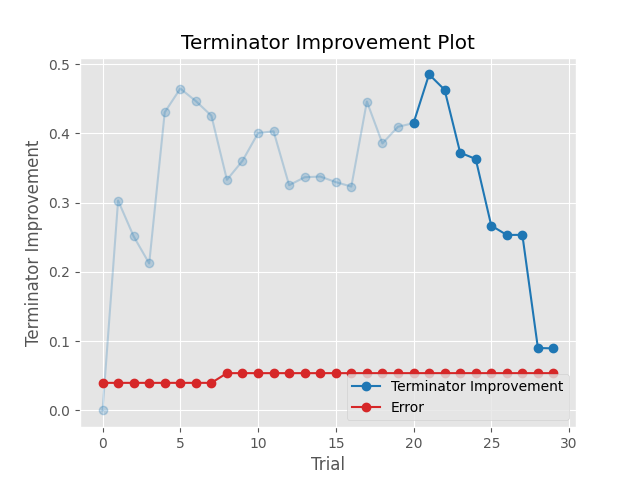

Note
Go to the end to download the full example code.
plot_terminator_improvement
- optuna.visualization.matplotlib.plot_terminator_improvement(study, plot_error=False, improvement_evaluator=None, error_evaluator=None, min_n_trials=20)[source]
Plot the potentials for future objective improvement.
This function visualizes the objective improvement potentials, evaluated with
improvement_evaluator. It helps to determine whether we should continue the optimization or not. You can also plot the error evaluated witherror_evaluatorif theplot_errorargument is set toTrue. Note that this function may take some time to compute the improvement potentials.See also
Please refer to
optuna.visualization.plot_terminator_improvement().- Parameters:
study (Study) – A
Studyobject whose trials are plotted for their improvement.plot_error (bool) – A flag to show the error. If it is set to
True, errors evaluated byerror_evaluatorare also plotted as line graph. Defaults toFalse.improvement_evaluator (BaseImprovementEvaluator | None) – An object that evaluates the improvement of the objective function. Default to
RegretBoundEvaluator.error_evaluator (BaseErrorEvaluator | None) – An object that evaluates the error inherent in the objective function. Default to
CrossValidationErrorEvaluator.min_n_trials (int) – The minimum number of trials before termination is considered. Terminator improvements for trials below this value are shown in a lighter color. Defaults to
20.
- Returns:
A
matplotlib.axes.Axesobject.- Return type:
Axes
Note
Added in v3.2.0 as an experimental feature. The interface may change in newer versions without prior notice. See https://github.com/optuna/optuna/releases/tag/v3.2.0.
The following code snippet shows how to plot improvement potentials, together with cross-validation errors.
/home/runner/work/dash-docset-optuna/dash-docset-optuna/optuna/docs/visualization_matplotlib_examples/optuna.visualization.matplotlib.terminator_improvement.py:41: ExperimentalWarning:
plot_terminator_improvement is experimental (supported from v3.2.0). The interface can change in the future.
/opt/hostedtoolcache/Python/3.8.18/x64/lib/python3.8/site-packages/optuna/visualization/_terminator_improvement.py:93: ExperimentalWarning:
RegretBoundEvaluator is experimental (supported from v3.2.0). The interface can change in the future.
/opt/hostedtoolcache/Python/3.8.18/x64/lib/python3.8/site-packages/optuna/visualization/_terminator_improvement.py:98: ExperimentalWarning:
CrossValidationErrorEvaluator is experimental (supported from v3.2.0). The interface can change in the future.
0%| | 0/30 [00:00<?, ?it/s]
20%|██ | 6/30 [00:00<00:00, 53.33it/s]
40%|████ | 12/30 [00:00<00:00, 26.64it/s]
53%|█████▎ | 16/30 [00:00<00:00, 29.07it/s]
67%|██████▋ | 20/30 [00:00<00:00, 26.85it/s]
77%|███████▋ | 23/30 [00:01<00:00, 17.90it/s]
87%|████████▋ | 26/30 [00:01<00:00, 15.91it/s]
93%|█████████▎| 28/30 [00:01<00:00, 14.34it/s]
100%|██████████| 30/30 [00:01<00:00, 13.73it/s]
100%|██████████| 30/30 [00:01<00:00, 18.44it/s]
<Axes: title={'center': 'Terminator Improvement Plot'}, xlabel='Trial', ylabel='Terminator Improvement'>
from lightgbm import LGBMClassifier
from sklearn.datasets import load_wine
from sklearn.model_selection import cross_val_score
from sklearn.model_selection import KFold
import optuna
from optuna.terminator import report_cross_validation_scores
from optuna.visualization.matplotlib import plot_terminator_improvement
def objective(trial):
X, y = load_wine(return_X_y=True)
clf = LGBMClassifier(
reg_alpha=trial.suggest_float("reg_alpha", 1e-8, 10.0, log=True),
reg_lambda=trial.suggest_float("reg_lambda", 1e-8, 10.0, log=True),
num_leaves=trial.suggest_int("num_leaves", 2, 256),
colsample_bytree=trial.suggest_float("colsample_bytree", 0.4, 1.0),
subsample=trial.suggest_float("subsample", 0.4, 1.0),
subsample_freq=trial.suggest_int("subsample_freq", 1, 7),
min_child_samples=trial.suggest_int("min_child_samples", 5, 100),
)
scores = cross_val_score(clf, X, y, cv=KFold(n_splits=5, shuffle=True))
report_cross_validation_scores(trial, scores)
return scores.mean()
study = optuna.create_study()
study.optimize(objective, n_trials=30)
plot_terminator_improvement(study, plot_error=True)
Total running time of the script: (0 minutes 3.672 seconds)